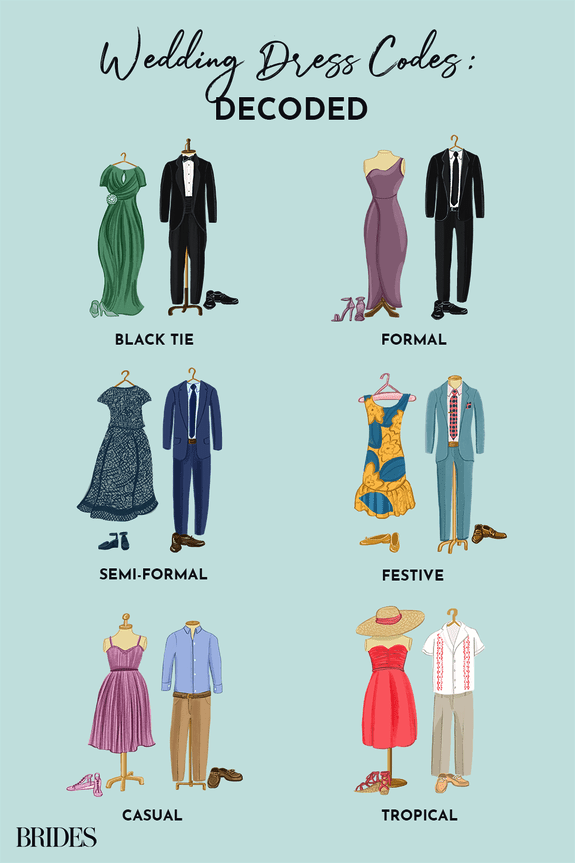

Frequently Asked Questions
RSVP Questions |
Planning Questions |
Venue Questions |
Day-Of Questions |
We Weren't Sure How to Ask
Q: What date should I RSVP by?
A: RSVP at your earliest convienance, no later than August 18, 2024.
Q: What if I need to change my RSVP status after I submitted it?
A: Directly text/call Dylan or Tyler.
Q: Can I bring additional guests/family members?
A: Due to the space constraints of our venue, we need to limit the number of attendees at our wedding. We are only planning for the people on your invitation, which includes a guest when indicated, to be in attendance based on your RSVP. Please do not plan to bring additional guests (including children). Please contact Dylan or Tyler with any special circumstances or questions.
Q: Where should I stay? Is there a hotel room block?
A: Yes, we have room blocks for our guests at multiple hotels. Please see the travel page for more information.
Q: Are there other events during the weekend we should be attending?
A: We are hosting a welcome dinner for those guests who are travelling to southern California for our wedding.
Q: Do you have suggestions for places to eat, drink, and see while I am in town?
A: Yes, please see the travel page.
Q: What should I wear?
A: Semi-formal attire. Jackets, suits, dresses, ties. Pointy high-heels not recommended as the floor is not even in all parts of our venue.
Q: What does semi-formal mean?
A: Semi-formal, sometimes called cocktail attire, is nicer clothing for special occasions but not as formal as tuxedos, etc. You can use this reference as a guide.

Q: Are there any colors you'd prefer me to wear?
A: Wear whatever colors you'd like.
Q: What will the weather be?
A: Last year at this time the temperatures ranged from the high to low 70's. Our venue is all outdoors, there are heat lamps and permanent clear tents to protect us should we encounter any rain. Wearing layers is always recommended.
Q: Is there parking at your venue?
A: Yes, but as it is quite limited. We will be covering the required valet costs. Please consider taking the shuttle we will also be providing.
Q: How do I get there?
A: See travel page for both driving instructions and shuttle options.
Q: Is your venue indoors or outdoors?
A: Our venue is almost exclusively outside.
Q: Is there cell service? What about Wi-Fi?
A: Cell service is limited in the canyon depending on your provider. The venue does not offer Wi-Fi. We encourage you to take advantage of this evening to disconnect and enjoy a once in a lifetime event.
Q: Does your venue accomodate people with limited accessibility?
A: Yes, there are paths that should require guests to use any stairs. Additionally, if you are staying in one of our hotels, please contact them as soon as possible after booking to request a room with any necessary accomodations you may need.
Q: Can we bring a wedding gift/card to the ceremony/reception?
A: We will have a card collection station at our venue. We would prefer you not bring any wrapped gifts to the venue as it creates a logistical challenge getting them all home. If you'd like to send us a wedding gift, we'd suggest you use the registry links above.
Q: Will there be a time gap between your wedding ceremony and the reception?
A: No, immediately after our ceremony, we will be hosting a cocktail hour followed by dinner.
Q: Will there be an open bar?
A: No, you'll have your choice of unlimited wine, beer, or two signature cocktails.
Q: Will there be meal options for guests with dietary restrictions or allergies?
A: Please note all food restrictions or allergies on your RSVP.
Q: What time will the reception end?
A: Exact time is to be determined, approximately 10:30 PM.
Q: Will there be an after-party?
A: Yes! Head to the lobby of the Courtyard Marriott in Woodland Hills.
Q: Can I take photos?
A: Yes, feel free to take photos. However we have hired a professoinal photographer. Please be mindful to not get in her way.
Q: Can we post photos on social media? Does your have a wedding hashtag?
A: You are welcome to share photos on social media, tag us, or use the hashtag #DylanTylerWedding. We'd love to see any pictures you capture from the weekend (whether you plan to share on social media or not) please add any photos to our google photo album here.
Q: I can't attend. Will there be a virtual celebration option?
A: No, we hope to have lots of photos to share though!
Q: Who is changing their last name?
A: Neither of us.
Q: Whose name goes first if we formally are addressing the both of you?
A: Either of us.
Q: Is it a marriage or a civil union?
A: It's a marriage. We are getting married at our wedding.
Q: Is your marriage legal everywhere in the U.S.?
A: It is now legally recognized by our local, state, and federal governments. Learn more about the road to marriage equality here.
Q: Who proposed to whom?
A: Dylan proposed to Tyler during our trip to Tokyo. Read more about our story and our proposal here.
Q: Since there is no bride can we wear white?
A: Sure, We would still recommend avoiding wearing something that may make you look like the bride.
Q: On your registry, does Honeyfund take a cut of the money we contributed to your honeymoon?
A: No, Honefund does not take a cut.
Q: Why can I not see any of the FAQ's?
A: You need to first go to the homepage and look up your invitation, then you can return to view more information on all pages.
A: You need to first go to the homepage and look up your invitation, then you can return to view more information on all pages.